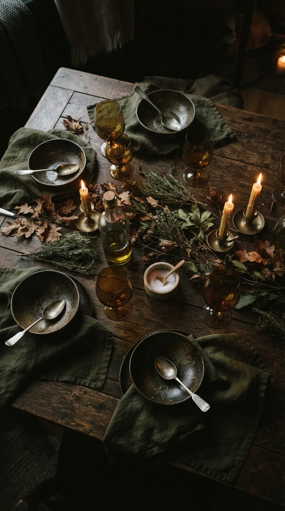

RAÍZ • OTOÑO 01
08 / 08
EDICIÓN 01 · CIERRE
Nos vemos en la próxima edición: invierno.
Guardá esta revista y compartila con quien cocina con vos.

RAÍZ • OTOÑO 01
Guardá esta revista y compartila con quien cocina con vos.